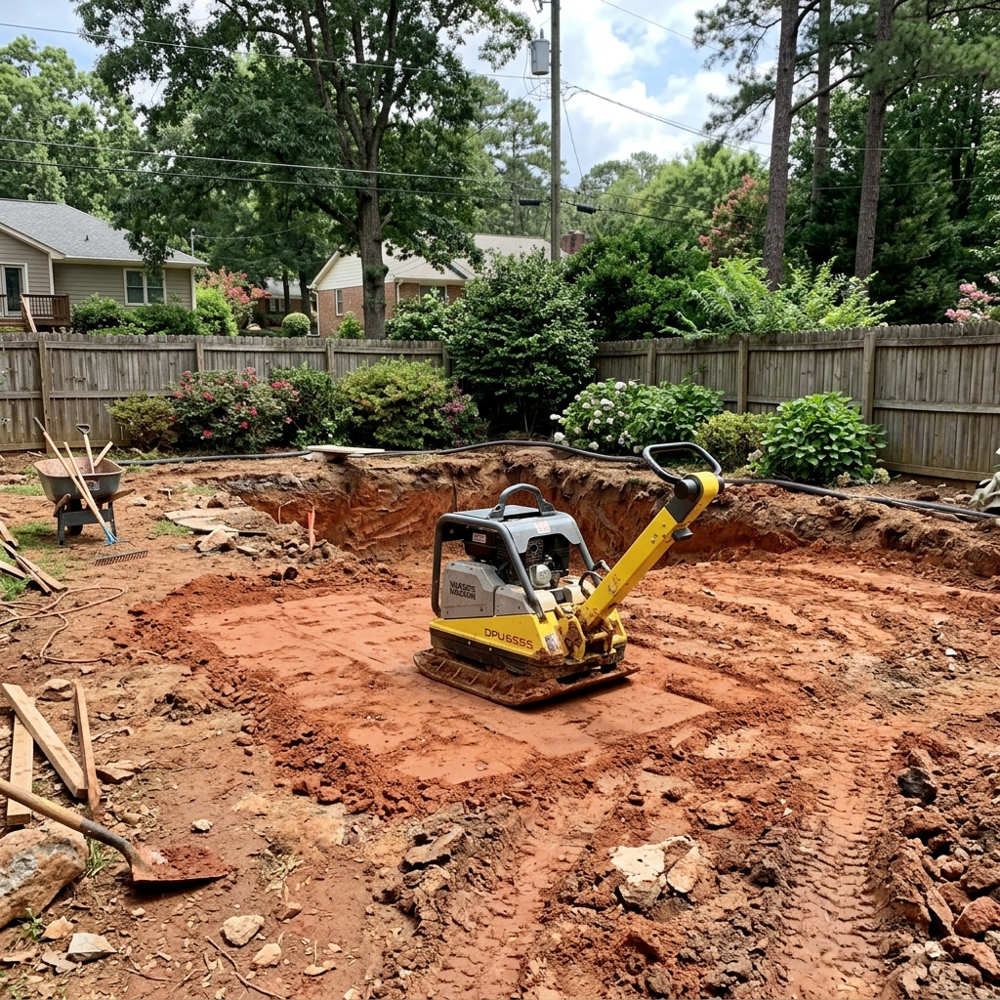

As we move through 2026, many homeowners in the Atlanta metropolitan area are looking for ways to maximize their outdoor living spaces. While the swimming pool was once the centerpiece of a suburban backyard in Northern Georgia, many residents in communities like Sandy Springs and Marietta are finding that an aging pool takes up valuable space that could be used for more modern outdoor living features.
At Atlanta Pool Removal Pros, we’ve seen a significant shift in how people utilize their backyards. Removing an older, high-maintenance pool is often the first step in a larger renovation project that can includes stone patios, custom outdoor kitchens, and even accessory dwelling units (ADUs).

A typical 2026 backyard restoration in Marietta, Georgia.
Why Now is the Time for a Change
Current Atlanta permit requirements and the increasing cost of pool maintenance in 2026 have led many families to reconsider the investment. A pool that was built in the 1980s or 90s often requires extensive repairs and resurfacing that can cost almost as much as removal. By opting for a professional demolition, homeowners are able to reclaim the square footage of their lot and design a space that fits their current lifestyle better.
One of the biggest concerns for local residents is the financial side of the decision. We always recommend checking out a detailed pool removal cost guide to understand how different demolition methods—like a partial fill versus a full removal—will impact your long-term property value and renovation budget.
Common Renovation Projects Post-Pool Removal
Once the compaction is done and the yard is level, the possibilities are practically endless. Some of the most popular projects we’ve seen in 2026 include:
- Natural Grass & Gardens: Taking advantage of our clay-rich soil to build a lush, green landscape as outlined in our yard restoration guide.
- Multi-Level Patios: Creating a space for outdoor dining and entertaining that flows naturally from the house after professional shell removal.
- Outdoor Play Zones: Reclaiming the yard for children to have a safe area that isn't limited by pool safety barriers. Check our 2026 Price List to see how to budget for this.
The key to a successful renovation starts with a rock-solid foundation. That’s why we focus so heavily on the professional demolition process and ensure perfectly compacted soil that won't settle over time.